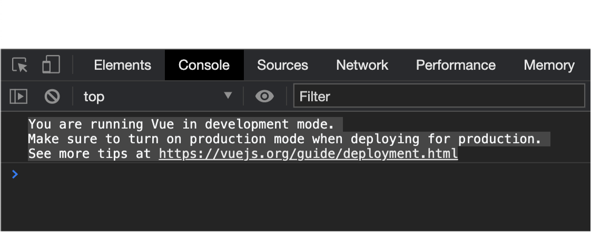

Vue 3
The following is a list of general notes about Vue 3 as it applies to our studies.
Reference
Migration build
A migration build of Vue 3 is expected in Q4 2020 - it will be compatible with Vue 2 with runtime warnings of incompatible usage.
Import from a CDN
Vue 2:
<script src='https://cdn.jsdelivr.net/npm/vue/dist/vue.js' defer></script>
Vue 3:
<script src='https://unpkg.com/vue@next'></script>
Create a new Vue instance (No build system)
Vue 2:
- Create app by initializing a new Vue instance
- Mount via the
eloption
// Create a root Vue instance
const app = new Vue({
el: '#app',
})
Vue 3:
- Create app using the
createAppfunction - Mount via the
mountmethod
// Create a unique app instance
const app = Vue.createApp().mount('#app');
Why the change?
In Vue 2, every root instance created via new Vue shared the same global
configuration.
For example, let’s say you created 3 Vue instances using new Vue and then invoked the
global
API use method to add a plugin. The result is this plugin would be invoked for all 3
app
instances:
// Vue 2 way
const app1 = new Vue();
const app2 = new Vue();
const app3 = new Vue();
Vue.use(plugin); // Plugin would apply to app1, app2, app3
This lack of isolation was problematic in certain situations (e.g. testing).
In Vue 3, we have the ability to invoke global API methods on unique instances:
const app1 = Vue.createApp();
const app2 = Vue.createApp();
const app3 = Vue.createApp();
app1.use(plugin); // Plugin would only to app1
Ref: Migration guide: A New Global API: createApp
Create a new Vue instance (with a build system)
If you create a new Vue 2 app using the Vue CLI, your main.js file will look
something like
this:
import Vue from 'vue'
import App from './App.vue'
Vue.config.productionTip = false
new Vue({
render: h => h(App),
}).$mount('#app')
Using Vue 3, it will look like this:
import { createApp } from 'vue'
import App from './App.vue'
createApp(App).mount('#app')
Note how in v3 we don’t import the whole Vue library, but just the method (createApp) we need.
This is because Vue 3 was restructured with tree-shaking in mind, allowing our build systems to only import the code we actually need from external libraries.
Ref: Migration guide: Global API Treeshaking
Another difference you’ll note in the Vue 3 version is the absence of this line:
Vue.config.productionTip = false
The production tip refers to a message that can show in the console warning us when we’re running Vue in development mode:
In Vue 3, we no longer have access to a global Vue.config API method; instead we can
use
app.config.
That being said, the way our Vue CLI build system is set up, it's no longer necessary to toggle the production tip off, as it will not display based on our environment settings when building our application in development.
Ref: Migration guide: config.productionTip Removed
Data option
Vue 2
The data option could accept a plain JavaScript object:
const app = new Vue({
el: '#app',
data: {
item: '',
items: [],
},
});
Vue 3
The data option expects a function declaration that returns a JavaScript option:
const app = Vue.createApp({
data() {
return {
item: '',
items: [],
}
}
}).mount('#app');
This allows each app instance to have its own isolated data, and matches the pattern we’ll use when making components (later in the semester).
Ref: Migration guide: Data option
Keys
In our notes on conditional rendering, we learned how keys can be used in conditional branches to prevent the re-use of elements.
This is no longer necessary in Vue 3 since Vue now automatically generates unique keys.
Ref: Migration guide: Key attribute
Precedence of v-for and v-if in the same element
In v2, when v-for and v-if are used on the same element, v-for takes precedence.
As we learned in the notes on conditional rendering, this created rendering inefficiencies that made using v-for and v-if on the same element a bad idea.
In v3, this switched so that v-if takes precedence, meaning combining the two is no longer inefficient.
However, because of syntax ambiguity it’s still recommended to avoid this practice and instead use computed properties.
Ref: Migration guide: v-if vs. v-for Precedence
Lifecycle changes
In v3, the following lifecycle events were renamed:
-
destroyed=>unmounted -
beforeDestroy=>beforeUnmount
For reference:
{kind=link}
{kind=link}
(The differences include how the app is created, and the renaming of the above-mentioned events)
Components
Initialization
In v2, we could globally initialize components:
// Initialize a component that will be globally available
Vue.component('my-component', {
// Options...
});
// Initialize the root Vue instance which would have
// the ability to utilize the above component
let app = new Vue({
// Options...
});
In v3, the above code would be refactored to:
// Initialize the root Vue instance
const app = Vue.createApp({
// Options...
});
const myComponentOptions = {
// Options...
};
// Initialize a component locally within the root Vue instance
app.component('my-component', myComponentOptions);
This change was introduced for efficiency purposes, ensuring that any component that is initialized is actually used.
Single parent element rule
A component’s template no longer has to have a single parent element.
In v3, this template is valid:
<span>Foo</span>
<span>Bar</span>
In v2, it would produce an error because there is no single parent element. Instead, it would need to look something like this:
<div>
<span>Foo</span>
<span>Bar</span>
</div>
Vue router
Installing in a Vue 2 project:
$ npm install vue-router
Installing in a Vue 3 project:
$ npm install vue-router@next
Setting up in Vue 2 project:
// Import the VueRouter module
import VueRouter from 'vue-router'
// Make it available globally in Vue
Vue.use(VueRouter);
// Set up router by creating a new instance of `VueRouter`
const router = new VueRouter({
routes: [...routes here...]
})
// The router is made available to the root Vue instance
const app = new Vue({
router: router,
}).$mount('#app')
Ref: https://router.vuejs.org/guide/#javascript
Setting up Vue in a Vue 3 project:
// Import just the methods we need from the VurRouter module
import { createRouter } from 'vue-router';
// Set up router by invoking `VueRouter.createRouter`
const router = VueRouter.createRouter({
routes: [...routes here...],
})
// Root vue instance
const app = Vue.createApp({})
// The router is made available to the root Vue instance using the `use` method
app.use(router)